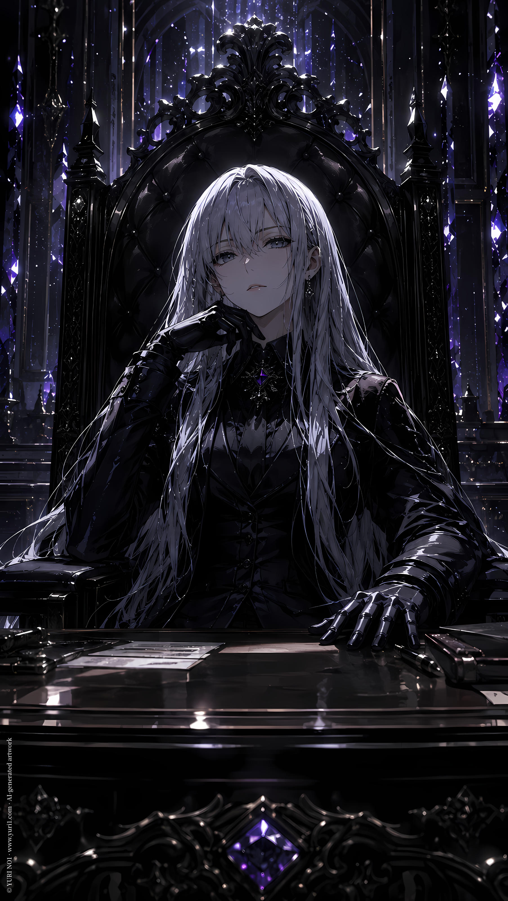

IP／ YURI NO1
D.Dark
CATEGORYIP
SERIESIP Original Characters
Full Text · YURI NO1
**Full Name:**
DDD Dark
**Chinese Name:**
漆黑（黑）
---
**IP:**
DDD
**Primary Appearances:**
DDD Presents
**Character Traits:**
Aloof, distant, quiet, self-directed, executive, boss, uncontrollable
**Hidden Traits:**
Humorous, easygoing, carefree, oblivious, henpecked
**Primary Love Interest:**
N.White
**Catchphrase / Mannerism:**
"Hmph."
"(Slight smile)"
"(Raised eyebrow)"
---
**Character Introduction:**
The owner of DDD Studio, so she does not often appear as a main character. However, whenever a performance alongside N.White is needed, she never refuses.
She is also N.White's romantic partner within the studio. Everyone knows that any member who tries to get close to White has to get past Dark first.
She appears to be quite wealthy.
Due to her imposing presence, she mainly plays leaders or powerful figures.